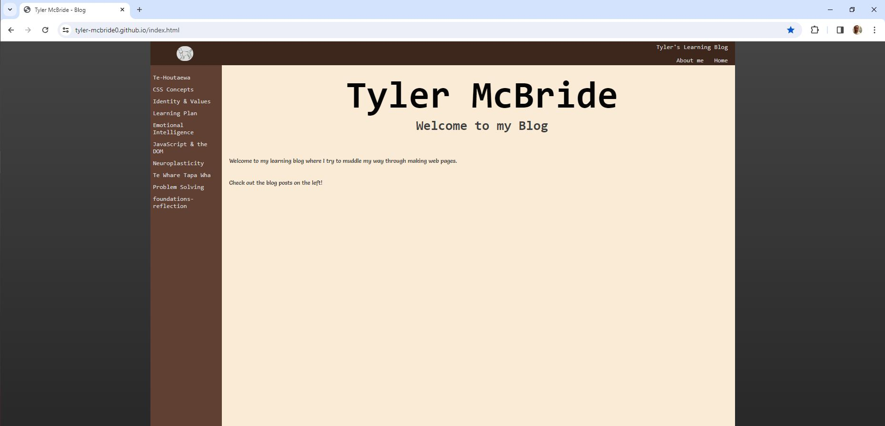

The old site:
How this blog used to look
Feel free to check it out below;

"Kindness is free"
Hello, awesome folks! I'm Tyler McBride, a 30-year-old guy proudly representing the picturesque Hutt Valley in Wellington. As a Kiwi through and through, I've proudly called this vibrant corner of the world home for three decades. Nestled amidst the lush landscapes and spirited community, this place has woven the fabric of my identity. In a lively household with 3 brothers and 2 sisters, I proudly claim the title of the second oldest sibling. Life in a big, boisterous family has gifted me with laughter, camaraderie, and a deep appreciation for the bonds that shape us. Join me as I unravel the chapters of my life, sharing tales of resilience, moments of joy, and the unique blend of experiences that make me who I am. From the hills of Hutt Valley to the broader canvas of existence, let's embark on this journey together.
When I'm not navigating the rich tapestry of family life, you'll likely find me on the squash court, chasing that elusive perfect shot. Squash isn't just a sport for me; it's a dance with strategy and agility that keeps both mind and body in sync. Indoors, where the heart meets hobbies, I find joy in a variety of activities. Gaming sessions offer a portal to fantastical realms, woodworking transforms raw materials into tangible creations, and the quiet embrace of a good book becomes a sanctuary for the mind. Venturing outdoors, the allure of the beach beckons irresistibly. With the sand beneath my feet and the rhythmic melody of the waves, I discover a profound sense of peace. It's not just a place; it's where I feel a kinship with the vastness of the ocean. In the company of loyal companions, particularly of the canine variety, life takes on an added layer of warmth. I proudly wear the badge of a dog person, cherishing the boundless joy and unwavering loyalty these furry friends bring into our lives. When the kitchen becomes my playground, it's a culinary symphony for friends and family. Cooking isn't just a task; it's an expression of love and connection, a way to nourish both the body and the soul. So, whether I'm crafting victories on the squash court, immersing myself in virtual realms, or savoring the simple joys of a beach day, each pursuit is a brushstroke on the canvas of my multifaceted life. Come along, and let's explore the myriad colors together!
In the symphony of my existence, the guiding melody is simple yet profound: kindness. A belief that there's always time to be kind, for in its simplicity, kindness holds the power to transform moments, mend hearts, and bridge the gaps between us. This philosophy is my North Star, a constant reminder that amidst the hustle and bustle of life, a small act of kindness can illuminate even the darkest corners. It's a currency that knows no bounds, requiring no fortune to spend yet yielding returns beyond measure. In a world that can sometimes feel chaotic, the choice to be kind becomes a beacon of light. It costs nothing, and yet its dividends are immeasurable. Like ripples on a tranquil pond, kindness extends far beyond the initial act, creating a tapestry of connections that bind us all. So, as I navigate the chapters of my story, kindness is not just a virtue; it's a way of life. It shapes my interactions, colors my perspectives, and adds a touch of compassion to the narrative we collectively weave. In a realm where time is our most precious commodity, choosing kindness is an investment with infinite returns, a legacy that lingers in the hearts of those touched by its grace.
Feel free to check it out below;